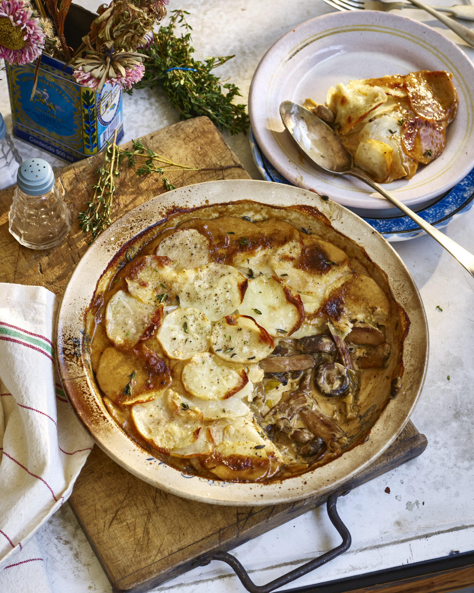

Creamy Mushroom Potato Pie

One pot creamy mushroom potato casserole.
Ingredients
Mushroom Filling
- 500g Mixed Mushrooms
- 1 Leek, finely chopped
- 3 Cloves Garlic, minced
- 1 tsp Dried Chilli
- 1 tbs Dried Tarragon
- 1 Bay Leaf
- Pinch Ground Nutmeg
- 3 tbs Plain Flour
- 1 Shot Brandy (optional)
- 2 Cups Vegetable Stock
- 1 cup Oat/Soy Cream or Coconut Milk will work
- Pinch Sea Salt
- 1 tsp Cracked Black Pepper
Topping
- 2 Maris Piper Potatoes, peeled
- 3 tbs Olive Oil
- Pinch Sea Salt & Pepper
Garnish
Method
- Pre heat your oven to 200 degrees C.
- little oil. When the pan is hot sauté the mushrooms for 8-10 minutes, stirring often making sure they’re caramelized & golden. Season with salt & pepper whilst they are cooking.
- Stir through the leek, garlic, chilli, tarragon, nutmeg & the bay leaf. Cook for a few more minutes then deglaze with the brandy, if using. Cook for a couple of minutes to cook off the alcohol. Then stir through the plain flour. Cook the flour out for 1 minute then add the vegetable stock. Stir well with a spatular & bring to a simmer.
- Stir through the oat cream & lemon juice. Let the mushroom filling bubble away for 10 minutes & meanwhile slice your potatoes fine using a mandolin or sharp knife. Lay the potato slices on top of the mushroom filling neatly, then drizzle over olive oil & a pinch of seasoning.
- Place the pie into the oven to bake for 25 minutes or until the potatoes on top are golden and crisp.
- Garnish with thyme and serve.